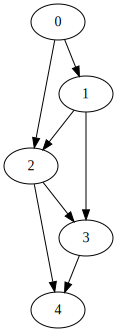
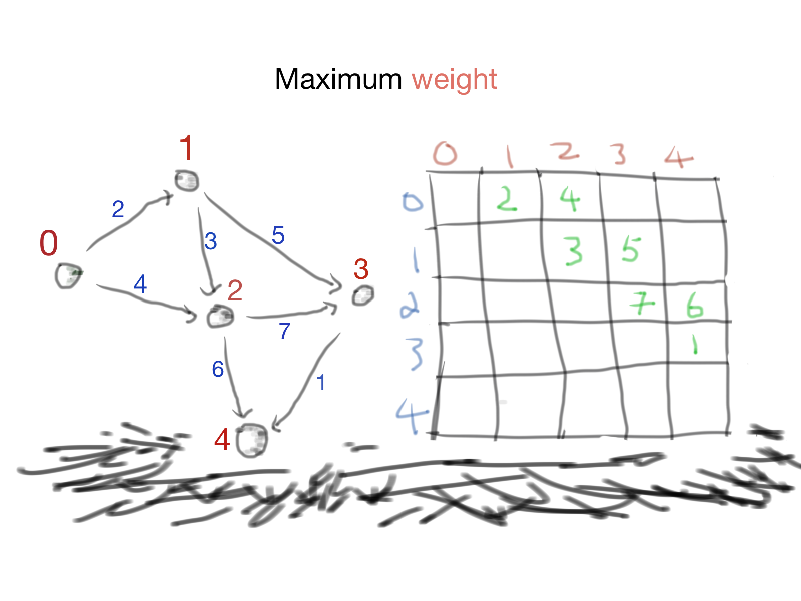

Print all children k distance from given node in C++
1. How we can translate a graph from two dimentional array or vice versa.
The idea is simple:
The Graph is formed by nodes and edges
Each edge is decided by two nodes
It means we can use $[x, y]$ to define an edge
Edge is just a weight
Graph can be translated to two dimentional array from about idea.
void kdistGraph(int** arr, int k, int h, int w){
if(k == 0){
std::cout<<"["< 0){
for(int i=0; i< w; i++){
if(h != i && arr[h][i]){
if(k - 1 == 0)
std::cout<< "[" << i << "]" << std::endl;
else if(k > 0)
kdistGraph(arr, k-1, i, w);
}
}
}
}

Print all children K distance from a Node in a Graph
